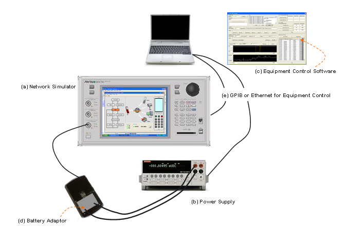
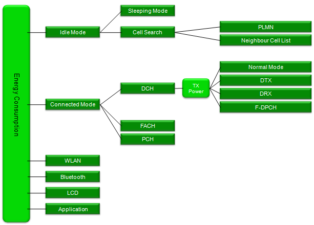
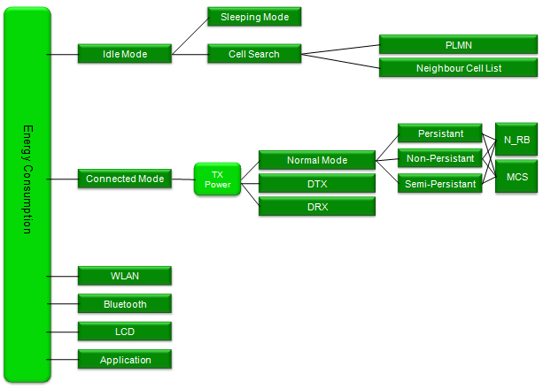
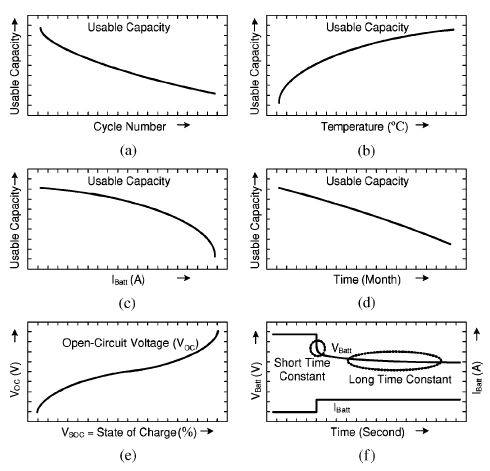
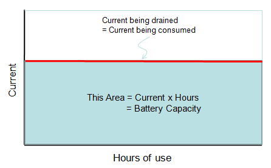
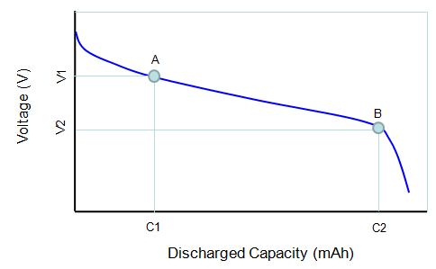
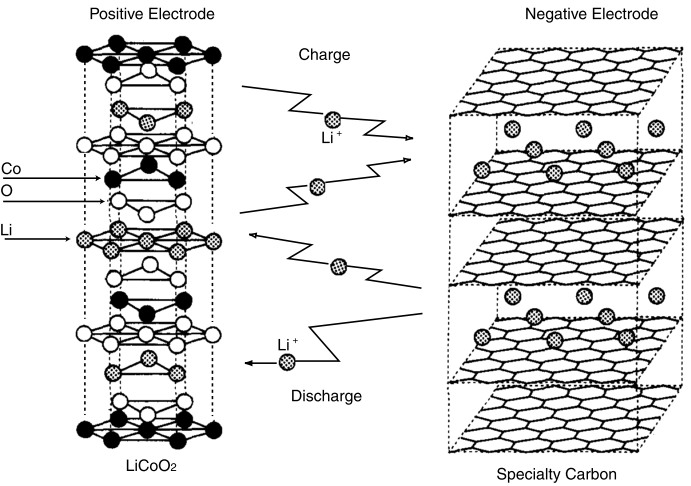
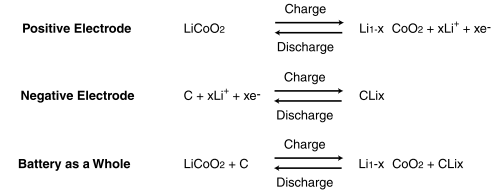

|
Battery Life Home : www.sharetechnote.com |
||||||||||||||||||||||||||||||||||||||||||||||||||||||||||||||||||||||||||||||||||||||||||||||||||||||||||||||||||||||||||||||||||||||||||||||||||||||||||||||||||||||||||||||||||||||||||||||||||||||||||||||||||||||||||||||||||||||||||||||||||||||||||||||||||||||||||||||||||||||||||||||||||||||||||||||||||||||||||||||||||
|
One of the issue with the battery life test would be that there is very few international test standard. One of the few document would be the one from GSM Association. A couple of years ago I saw some movement for many UE makers to strictly follow the description (prescription ?) of these GSMA document, but I noticed that most of them start defining their own test method for the battery consumption. It is understandable because battery consumption is influenced a lot by various application and the mode operation of those applications and these applications are different for each of UE makers and UE models. But I still think the GSMA document can be a good guideline in most cases.
There can be many different kinds of Test Setup to fullfil the battery life test, but one example of a typical setup would be as follows. (This is the setup I integrated and used a couple of years ago for UMTS battery life test).

Let's think about each components of the setup. I am not saying you have to use the exact same equipment and same configuration, but I hope this can be a useful guideline for you.
(a) Network Simulator
This is the equipment that can simulate Basestation( NodeB or eNodeB) and some additional core network capability that can cover up to RRC, NAS and data transaction. I haven't seen many company who purchased this kind of expensive equipment only for battery life test. In most case, they are reusing whatever network simulator they already have. So if you have only one kind of Network Emulator, you wouldn't have any choice, you just have to utilize it as much as possible. If you have several different type of network simulator in your company and have choices to select, you have to think of which type of network simulator would be the best fit before you start setting up the test system. Most of the network simulator is designed to perform various tests for 3GPP conformance (RF or Protocol) test. So if the equipment is too much restricted to conformance test without much possibility of extending the functionality, it may not be best fit for the battery life testing. I would recommend you to chose such an equipment that would give you as much flexibility (possibility of extending functionalities) as possible. In many cases, extending functionality of the equipment would mean a lot of extra work(e.g, creating/modifying the protocol stack of the equipment or doing a lot of GPIP programming), but once you do the extrawork and automate the process, it could save a lot of extra work for many other people.
(b) Power Supply
In battery life testing, the importance of Power Supply is very high. The Power Supply in Battery Life Testing should be able to display both voltage and current being drained by DUT and transfer the values to PC on real time basis. In some case, UE chipset changes the mode of operation in very short amount of duration and repeat the process (e.g, sleeping mode -> wake up mode -> sleeping mode) in very short time period (e.g, several miliseconds time scale). So following features can be important selection criteria.
i) How often the power supply can measure current (or voltage) ? i.e, what is the max sampling rate ? ii) How quickly it can send the data to control PC ? iii) How much measurement data can be stored in the power supply ? i.e what is the max data storage ?
If you want to measure very detailed current consumtion changes (e.g, current changes in every miliseconds or so), you should have very large storage capability within the power supply since it is almost impossible to get these values from the control PC on real time basis. If the total measurement time is short it wouldn't be a problem, but if you want to measure all of these data (data per one or a few miliseconds) for a long time (e.g, several minuites to 30, 40 minutes), it would be very tricky. I haven't seen any power supply that can store this amount of data. So you would need some trade off between measurement interval and total measurement time when you select the power supply.
If you are interested in measuring the average current consumption over a long period (i.e over several minutes or hours) the sampling rate may not be so important, but if you want to measure the current consumption in very detail (e.g, very detailed power profile during cell scanning or during DTX, DRX period, you may need the power supply with very high sampling rate).
(c) Equipment Control Software
There are many test that can be done manually (i.e, manually pressing buttons on the equipment and write down the measured value) but Battery Life Test is not the thing that can be done manually since most of the test involves reading the current value with a fraction of second and do this for a long time. In many case it would be you who has to do the automation programming unless you purchase a whole system designed and sold for battery life test. But a good news is that the programming for Battery life testing would be much simpler than other types of test (e.g, RF or Protocol Conformance Test).
(d) Battery Adaptor
This is a small thing, but it may be a most critical component to enable or disable you to perform the test or not. As you see in the test setup picture, the UE battery port should be directly connected to the power supply. For this, you would need a specially designed adaptor which is fit into UE's battery slot and has a pair of extention cable which can be connected to the power supply. If you are working at a UE maker and try to test your own UE, it would be easy to get these adaptors, but if you are in the position to test a radomly selected commercial UEs which is not yours, getting this kind of adaptor would be the most tricky part to setup the test system.
Since there are too many different way or condition to test Battery life, it is all up to you how to configure the Network Simulator and UE application for the test. Sometimes this kind of 'no fixed standard' would make us feel discomfort. Especially if you are not so adventurous in engineering and prefer simple 'button pressing' type of person -:).
From the GSMA document that I linked above, I found a set of very practical guidelines for the parameter selection and I fully agree with this guide line.
Following is the whole set of paramters described in GSMA TS09. I merged several tables from the document into a big table as follows. This may not be all the possible parameters you need for the test and you don't need to use all of these parameters either, but can be an excellent guide for your test. I strongly recommend you to go through all of these parameters and think about practical meaning of each parameters.
According to my experience and some interview with other customers, the measurement result based on GSMA condition doesn’t make much difference in terms of current consumption, so many engineers start losing appetite of this kind of testing. And they started to investigating other factors with more influence on current consumption (Battery Life). Some of these factors in UMTS case can be as follows.
i) Sreen On/Off (in case of mobile phone, smart phone) ii) DRX cycle (in IDLE mode) iii) Current consumption during cell selection/reselection iv) Current consumption during Handover v) DRX/DTX in connected mode (UMTS Rel 7 and higher) vi) RRC State Changes (Cell DCH -> FACH -> PCH)
Since there can be so many different combination of UE status for the energy consumption, my recommendation is to create a kind of tree diagram for your test plan first. One of my personal example is as follows. This is for WCDMA and is very much simplified one. Basic idea still based on GSMA criteria and with a little modification. You may have your own criteria and different shape of the tree.

Following is a possible example for LTE case. Again, this is only one example and you may come up with your own plan depending on your device implementation.

But this cannot be the full list of factors and there would be various other types of factors. There may be many factors which are specific to each customer. So it is almost impossible to develop a general purpose battery life testing tools that can meet everybody’s requirement. (One possibility is to develop a customer specific tools (e.g, a tool for a specific system operator) based on the requirement from the customer if they can clearly define those requirement).
Here goes an example where you can see what kind of factors can be considered for battery life (energy consumption).
Analysis of Battery Characteristics
In most better life testing, we use Power supply in stead of real battery as described in Test Setup section. It is very useful to quantify various measurement and see the suptle changes of current consumption (e.g, current consumption changes by paging signal monitoring, current consumption changes between sleeping mode and normal mode etc). But there can be some drawback of this method. In real battery, most of battery characteristics changes with various conditions as shown below (especially with temperature and SoC=State of Charge), but it is very difficult to configure this kind of condition with power supply. In this case, I think old test method would help in some degree. Use real battery, do a lot of operations and how long the batter last. Of course, it would be a little difficult to quantify the test result with this kind of method. So I don't think you can completely replace the power supply method with this method, but I recommend to do this kind of test as a complimentary test.
 IEEE TRANSACTIONS ON ENERGY CONVERSION, VOL. 21, NO. 2, JUNE 2006 Accurate Electrical Battery Model Capable of Predicting Runtime and I–V Performance Min Chen, Student Member, IEEE, and Gabriel A. Rinc´on-Mora, Senior Member, IEEE
For the detailed analysis of Battery characteristics, refer to the paper listed above.
Factors affecting Battery Capacity
Battery Capacity : Battery Capacity is an indicator to show how much engergy is stored in a battery and it is measured in Ampere-Hours (Ahr), mili Ampere-Hours (mAhr) or kilowatt-hours(kWh) or watt-hours(Wh). For example, if the capacity of a battery is 1000 mAh. It means that if you use it for the system that is draining the current at 20 mA, it will last 50 hours. (20 mA x 50 Hours = 1000 mAh).

Discharge Curve :

Cutoff Voltage : Cutoff voltage is the specific voltage where you should not discharge any more. It may not the point where there is no remaining capacity meaning it may still have some remaining capacity, but your device may not work properly if the voltage of the battery goes below the cutoff voltage. In practice, if you see the battery gauage on your laptop or your mobile phone goes to the bottom, it may signal you that your battery voltage reached the cutoff voltage and you should recharge the battery.
< Lithium Ion >


Note : http://industrial.panasonic.com/www-data/pdf/ACI4000/ACI4000PE5.pdf
|
||||||||||||||||||||||||||||||||||||||||||||||||||||||||||||||||||||||||||||||||||||||||||||||||||||||||||||||||||||||||||||||||||||||||||||||||||||||||||||||||||||||||||||||||||||||||||||||||||||||||||||||||||||||||||||||||||||||||||||||||||||||||||||||||||||||||||||||||||||||||||||||||||||||||||||||||||||||||||||||||||